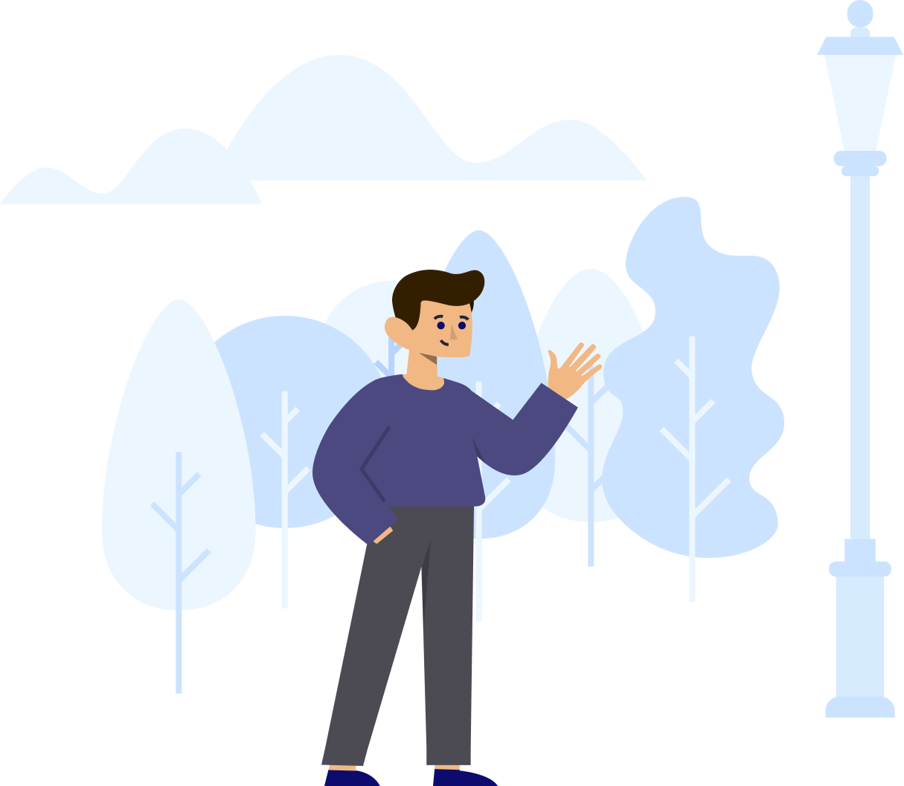

Essentialism
Why Essentialism?
In a world with everything shouting for you attention, the disciplined pursuit of less has never been more needed. Enter Essentialism. The Way of the Essentialist involves doing less, but better, so you can make the highest possible contribution. It’s not about getting more done in less time or getting less done.
It’s about getting only the right things done. It’s about regaining control of our own choices about where to spend our time and energies instead of giving others implicit permission to choose for us. The first step to essentialism is identifying your values.
Meet the Team
Asha Franchi
UI Developer

Colton Mortensen
UX Designer

Jack Ober
Front-End Developer
Lisa Marie Taylor
UI Developer

Ruben Ponce
Back-End Developer
Volha Hancharova
UI Developer

Arthur Leonard
Team Lead
Find us on:


Essentialism 2019. All rights reserved.